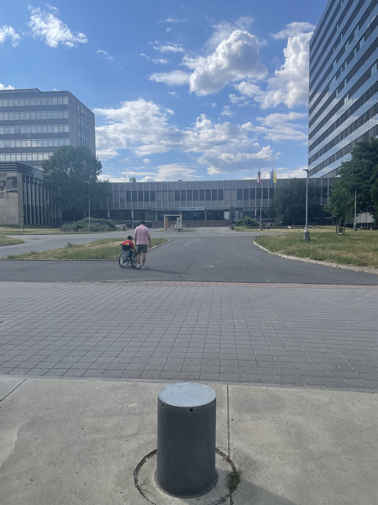
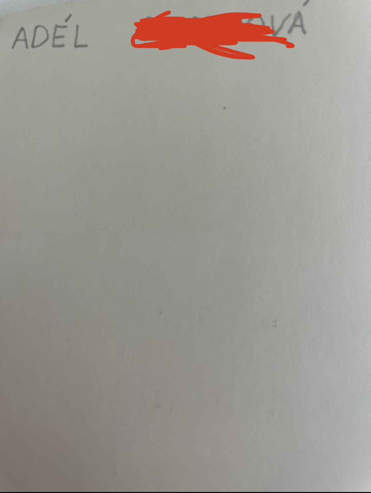

Quest skončil. Výherce: Yusui, poražený Tonik.
Jakékoliv otázky můžete posílat mimo jiné sem.
Bohužel jeden z vás nahlásil, že kniha už tam není, asi si ji vzalí bezdomovcí. Snad si ji přečtou, ať je víc schopných ajťáků jakou je Adélka. A ty vzpomínky už nám nikdo nevrátí. Každopádně informace dole jsou neaktuální. Pořád mám PDF knihy, avšak ho nemohu dat sem kvůli autorským právům, tak kdyžtak mi pošlete mail a čekejte na další quest.
Nakonec ještě určitě bude další quest (přece máme páté výročí spolu a bude hooodně super), který je skoro hotový, ale pro jeho vyřešení je potřeba jiná knížka, kterou jsem dal Adélce. Tuto knížku (podepsanou a s mega roztomilými vzkazy) jsem se svolením Adélky dal do knihobudky naproti fakultě stavební ČVUT (ano, nevěděl jsem kam ji dát). Pravděpodobně tam bude, dal jsem ji tam v pátek před odjezdem na dovolenou. V jiném případě mi napište mail, mám ji i v PDF. Jak poznáte knihu? Je podepsaná. Fakt by tam měla být.
Místo schovu je tady

A tady je i podpis

A prosím prosím prosím ten další quest bude opravdu hooodně hooodně zajimavý a stojí za to (Adélka mi s nim pomáhala)!

Tento rok je 5 let, co tvoříme s Adélkou pár. Tady jsem chtěl přiložit naše vzpomínky a první dopis, ve který jsem jí svěříl lásku. Poslal jsem jí ho, když byla v Berlíně na studiích.
Fotogragie dopisuSamozřejmě jsem ho poslal v krásné obálce a zašifrovaně, aby na to nepřišla dřív. Jsem na to hodně pyšný, a proto si ho teď můžete zkusit rozluštit i vy.
Tenkrát jsem jí dal knížku C Programming A Modern Approach 2nd Ed. (samozřejmě byla dostupná online z Internet archive, tady je odkaz )Vlastně celá tato šífra je o tom, že každé číslo v šifře odpovídá prvnímu písmenu na nějaké stránce této knihy (Aďa na to musela přijít sama). Tudíž číslo 19 odpovídá písmenu a, číslu 65 odpovídá písmeno b atd. Písmena x a y nemájí odpovidájící stránky, proto tam jsou napsáné. Takže první krok je ke káždému číslu v dopise najít odpovidájící stránku a napsat místo něj první písmeno z této stránky. Pokud jste teď zkoušeli něco přečist, tak nic nevyjde, je potřeba další krok. Další nápovědu podat nemohu, každopádně tato knížka je dostupna online.
Následně pro rozluštění je potřeba projet tento text Caesarovou šífrou (dostupné třeba zde). Nemohu prozdradit posun, Adélka na to také musela přijít sama. Mohu prozradit jen to, že text je napsaný v češtině bez diakritiky a myslím, že i bez rozlišování písmen. (tudíž stačilo vyzkoušet posunout si číslo na této stránce, a pro fajnšměkry jako je Yusui napsat si kód v C)
Mimochodem před Yusuiem smekám klobouk, protože to dal za 40 minut, což je o něco délé, než se učil na zkoušku ze senzorů.
A potom začaly těch nějlepších pět let s ní. Nejdříve long-distance relationship a teď krásný vztah.